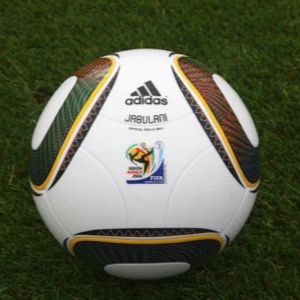
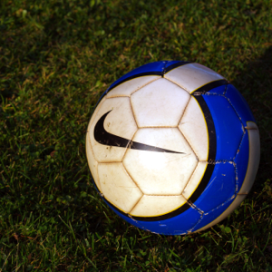
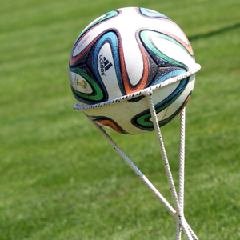
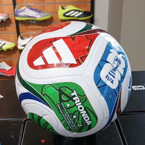
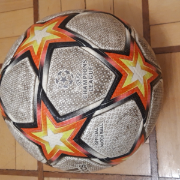
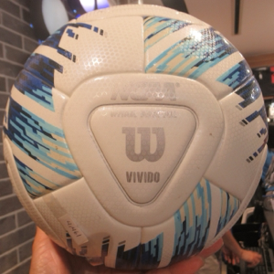

These are soccer balls I have played with, ranked from best (Peak) to worst (Diabolical).
| Tier | Ball 1 | Ball 2 | Ball 3 | Ball 4 | Ball 5 |
|---|---|---|---|---|---|
| Peak |
 Adidas Jabulani |
 Nike T90 Aerow |
|||
| Elite |
 Adidas Brazuca |
 Adidas Trionda Pro |
 Adidas UCL Final Ball |
||
| Mid |
 Wilson Vivido NFHS |
Select Brillant Super | |||
| Garbage | Brine Championship II | Select Numero 10 NFHS | |||
| Diabolical | Spalding TF-5000 | Wilson Honor |
Why I Ranked Them This Way
- Peak: The Jabulani and T90 Aerow are crazy for kicking knuckleballs and produced goals that will rarely ever be replicated.
- Elite: These are high quality balls made for big occasions like the World Cup and Champions League, and they bring back nostalgic moments, like David Luiz's free kick for Brazil against Colombia with the Brazuca in 2014.
- Mid: These balls have everything you expect, with a bit of padding and grip, and they get the job done.
- Garbage: These are generic high school practice balls that are slippery, overly pumped, and fly weird in the air.
- Diabolical: You would almost never use these in a competitive setting. They are more for little kids or messing around in the backyard.